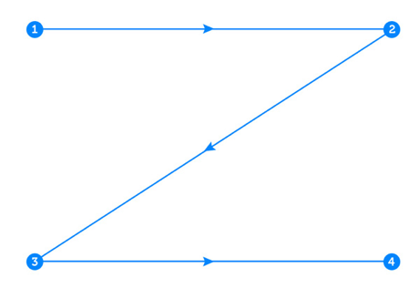
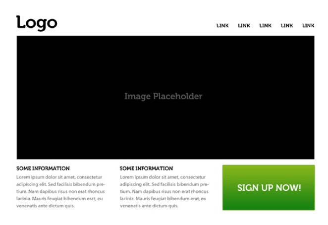
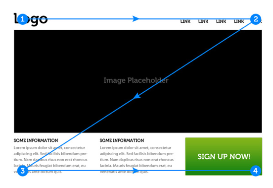
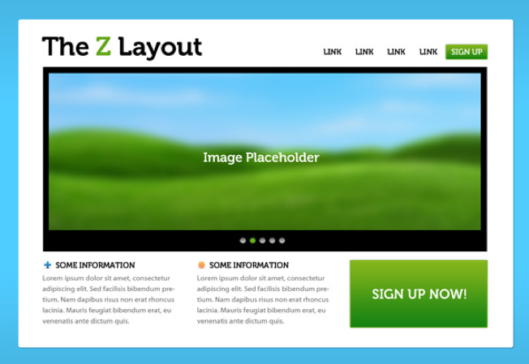

LAYOUT
Z LAYOUT
The Z-Layout is a great way to start just about any web design project because it addresses the core requirements for any effective site: branding, hierarchy, structure, and call to action. While the classic "Z-Layout" isn't going to be the perfect solution for each and every website out there, it's certainly a layout that's effective enough to warrant inclusion in any web designer's arsenal of layout ideas.
INTRODUCING THE Z-LAYOUT
The premise of the Z-Layout is actually pretty simple: super-impose the letter Z on the page. Place the items that you want the reader to see first along the top of the Z. The eye will naturally follow the path of the Z, so the goal is to place your "call to action" at the end. All along the path you can include bits of information that build up to the call-to-action. Let's take a look at the diagram:
Notice that we've numbered the key points along the path - these represent the order in which a reader is likely to view the page content. Let's see how this translates to an actual layout:
Now let's overlay the Z-Diagram on top of the layout:
There's certainly nothing complicated about this layout - but it quickly and effectively moves the eye from Point 1 to Point 4 in a logical order - concluding with a powerful call to action. There's still a few things that we can do to spice this layout up though... so let's add a few things to the design:
•Background separation to focus the eye movement inside the framework of our design.
•A styled logo to grab the user's attention at point #1.
•A colorful "sign up" button at point #2: this will reinforce the desired eye movement.
•A Featured Image Slider in the center of the page: this will separate the top section of the design from the bottom and facilitate eye movement downward.
•Icons at point #3 and along the bottom axis: this will encourage "title scanning" as the eye moves to the call to action.
•A big "call to action" at point #4 - thanks to the new background separation, this feature should stand out more.
Here you can see that the new "sign up" button in the navigation stands out more; The "slider" that we've added to the leaderboard area helps keep the user's attention within the center of the frame; The 2 icons next to the blocks of content in Point 3 also help to make them a bit more visually interesting. Again - this stuff is simple as it can be, but simple can be good when it comes to website design! You can layer in complexity as you please, but don't overlook the power of a simple, effective layout.
WHY IT WORKS?
The Z-Layout certainly doesn't need to be the final concrete solution for all sites, but as I mentioned before, it's often a great jumping off point for any design project because it tackles the 4 of the big principles of an effective design:
•Branding
•Hierarchy
•Structure
•A Call to Action
It works because most Western readers will scan a site the same way that they would scan a book - top to bottom, left to right. From this simple foundation you can pretty much go anywhere: Add multiple calls to action, shrink the height of the Z, extend it, do whatever you'd like that makes sense to the goal of the site.
Let's take a look at a few great site designs that use the Z-Layout as the basic structure. One thing you'll want to note in these examples is how the z-layout is able to adapt. The Call to Action may not always be the same (some sites may want to drive you to their portfolio more than they want to you "Sign Up"); the content along the path may look markedly different than our example. The thing to notice is how the storytelling aspect is carried across: 1, 2, 3, Action! By moving the eye along the Z-Path, the chances that a viewer will end up doing what you want them to do is increased.